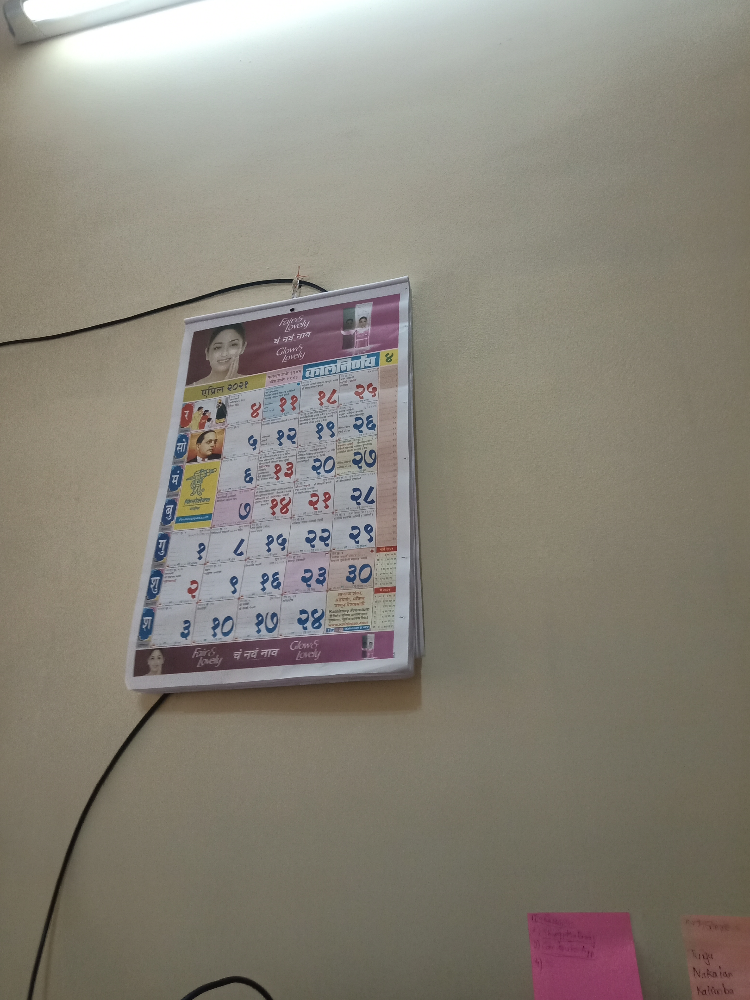

Test Image -

Output on Microsoft Azure- Bottle
Output on Mobilenet Model- perfume, essence
Result - Mirosoft Azure is more accurate
Test Image -

Output on Microsoft Azure- packet
Output on Mobilenet Model- packet
Result - Microsoft Azure and Mobilenet Model is accurate
Test Image -

Output on Microsoft Azure- Chair
Output on Mobilenet Model- Stool
Result - Mobilenet Model is more accurate
Test Image -

Output on Microsoft Azure- television
Output on Mobilenet Model- desktop
Result - Mobilenet model is more accurate
Test Image -

Output on Microsoft Azure- machine
Output on Mobilenet Model- CPU
Result - mobilenet model is more accurate